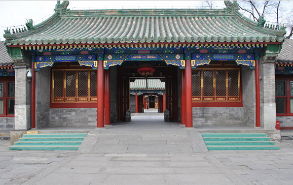
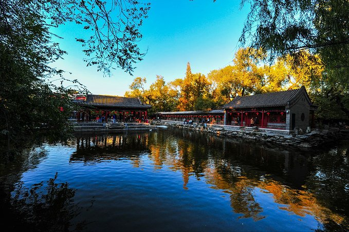

More Website Templates @ TemplateMonster.com - March 10, 2014!
胡同故事
>恭王府
恭王府

乾
隆四十一年，即1776年，和珅开始在这东依前海，背靠后海的位置修建他的豪华宅第，时称“和第”。有说法称、明弘治年间、大太监李广也曾经置第于此。嘉庆四年正月初三太上皇弘历归天，次日嘉庆褫夺了和珅军机大臣、九门提督两职，抄了其家，估计全部财富约值白银两千万两，相当于清政府半年的财政收入，所以有“和珅跌倒，嘉庆吃饱”的说法。同年正月十八，即1799年2月22日，和珅被“赐令自尽”。而宅子本身，则如愿归“爱豪宅不爱江山”的胞弟庆僖亲王永璘所有。与此同时，嫁予和珅之子的乾隆之女和孝公主，仍居住在半座宅第中。咸丰元年，即1851年，清末重要政治人物恭亲王奕成为这所宅子的第三代主人，改名恭王府恭王府之名由此沿用至今。恭王府分中东西三路，分别由多个四合院组成，后为长160米的二层后罩楼。恭王府历经了清王朝由鼎盛而至衰亡的历史进程，承载了极其丰富的历史文化信息，故有了“一座恭王府，半部清代史”的说法。恭王府由府邸和花园两部分组成，府邸不仅宽大，而且建筑也是最高规制。明显的标志是门脸和房屋数量。亲王府有门脸五间，正殿七间，后殿五间，后寝七间，左右有配殿。低于亲王等级的王公府邸决不能多于这些数字。房屋的形式、屋瓦的颜色也是不能逾制的。恭王府的中、东、西三路各有三个院落，其中每一路的后两个院子是人们要游览的主要区域。府
邸建筑分东、中、西三路，每路由南自北都是以严格的中轴线贯穿着的多进四合院落组成。中路最主要的建筑是银安殿和嘉乐堂，殿堂屋顶采用绿琉璃瓦，显示了中路的威严气派，同时也是亲王身份的体现。东路的前院正房名为多福轩，厅前有一架长了两百多年的藤萝，长势甚好，在京城极为罕见。东路的后进院落正房名为“乐道堂”，是当年恭亲王奕欣的起居处。西路的四合院落较为小巧精致，主体建筑为葆光室和锡晋斋。精品之作当属高大气派的锡晋斋，大厅内有雕饰精美的楠木隔段，为和珅仿紫禁城宁寿宫式样（此为和珅僭侈逾制，是其被赐死的“二十大罪”之一）。府邸最深处横有一座两层的后罩楼，东西长达156米，后墙共开88扇窗户，内有108间房，俗称“99间半”，取道教“届满即盈”之意。恭王府由于是在权臣和珅邸宅的基础上改建而成，和珅当年定罪的二十大罪状中就有关于内檐装修的“僭侈逾制”问题，如其中的第十三款“查得和珅房屋竟有楠木厅堂，其多宝格及隔断门窗解仿照宁寿宫制度”。